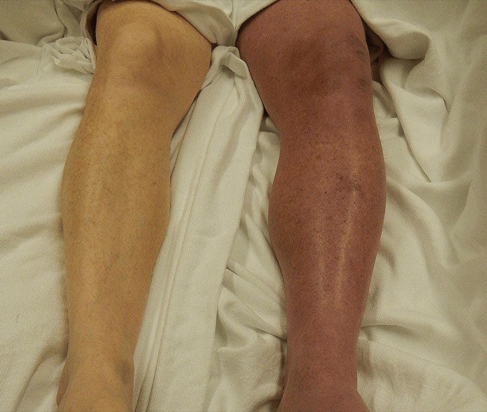

Página 3 · A cena clínica do TEV
TVP, TEP e a perna esquerda
TVP é a manifestação comum (75%) — os sinais clássicos
A manifestação mais comum do TEV na gestação e no puerpério é a trombose venosa profunda (TVP), que responde por cerca de 75% dos casos. Os sinais são os clássicos da TVP: dor, calor, edema, o sinal de empastamento (a panturrilha fica dura, tensa à palpação) e a dor à dorsiflexão do pé — o sinal de Homans. É o quadro que você procura na perna da puérpera com queixa de dor em membro inferior.
A predileção esquerda e a compressão iliofemoral
Aqui está o achado de prova. A TVP na gestante tem risco maior de ser à esquerda — e isso já foi cobrado explicitamente em prova. O mecanismo é anatômico e vale a pena entender, não decorar: o aumento do volume uterino comprime a artéria ilíaca direita, que cruza por cima da veia ilíaca comum esquerda. A veia esquerda, prensada entre a artéria que pulsa por cima e a coluna/pelve por baixo, sofre uma compressão iliofemoral maior que a do lado direito. Fluxo mais obstruído à esquerda, trombose mais provável à esquerda. Quando a questão descreve uma TVP em gestante, a perna esquerda é a aposta.

Não é "dor na perna" isolada: é a assimetria objetiva — um membro nitidamente mais volumoso, com edema e mudança de cor. O confundível é o edema fisiológico, que tende a ser bilateral e simétrico.
Cureus (relato de caso, síndrome de May-Thurner), 2024. Licença CC BY 4.0 · fonte
TEP é o grave (25%)
O tromboembolismo pulmonar (TEP) é mais raro — cerca de 25% dos casos — mas é o grave, o que mata. É o desfecho temido de um trombo que se desprende e migra para a circulação pulmonar.
A dispneia do TEP × a dispneia fisiológica da gestante
Este é o ponto onde a banca te derruba. A gestante vive uma dispneia fisiológica — ela está sempre um pouco cansada, com a respiração mais curta, por conta das próprias adaptações da gravidez. O desafio é não confundir esse cansaço basal com um TEP. A chave é o modo de instalação e a companhia: a dispneia do TEP é de início súbito, não o cansaço arrastado de sempre. E vem acompanhada — dor torácica de caráter pleurítico, que pode ter hemoptise, com taquicardia, sudorese e mal-estar geral. Não é "só a gestante cansada": é um quadro agudo e florido. Quando a questão quer levar ao TEP, ela monta o quadro florido de propósito — empilha vários sinais juntos (dispneia súbita + dor pleurítica + hemoptise + taquicardia + sudorese) para forçar a hipótese. Reconhecer esse empilhamento é reconhecer a intenção da banca.
Quiz — fixação
Puérpera com dispneia. Qual característica mais fala a favor de TEP e não de dispneia fisiológica da gestação?
- B — o quadro florido. O TEP se instala de repente e vem acompanhado — súbito + pleurítica + hemoptise + taquicardia + sudorese é o quadro que a banca monta de propósito.
- A. Descreve a dispneia fisiológica: arrastada, progressiva, ligada a esforço — tratar o TEP como piora de um cansaço crônico é a armadilha.
- C. É o cansaço basal do 3º trimestre, não um evento agudo.
- D. Alívio em repouso é a marca do fisiológico — a distinção não é a intensidade, é o tempo de instalação e a companhia de sinais agudos.
Sobre a lateralidade da TVP na gestante:
- C — endereço anatômico. A artéria ilíaca cruza e comprime a veia ilíaca comum esquerda, obstruindo mais o retorno daquele lado.
- A. Ignora um achado consagrado e já cobrado em prova.
- B. Troca o lado e inventa um mecanismo de cava — a compressão relevante é ilíaca, não cava, e favorece a esquerda.
- D. Acerta o lado mas cria restrição temporal falsa: a predileção decorre da anatomia da gestação, não é exclusiva do puerpério.
Suspeitou da TVP ou do TEP — agora, qual exame confirma na gestante, e qual exame da clínica geral você tem de esquecer aqui.